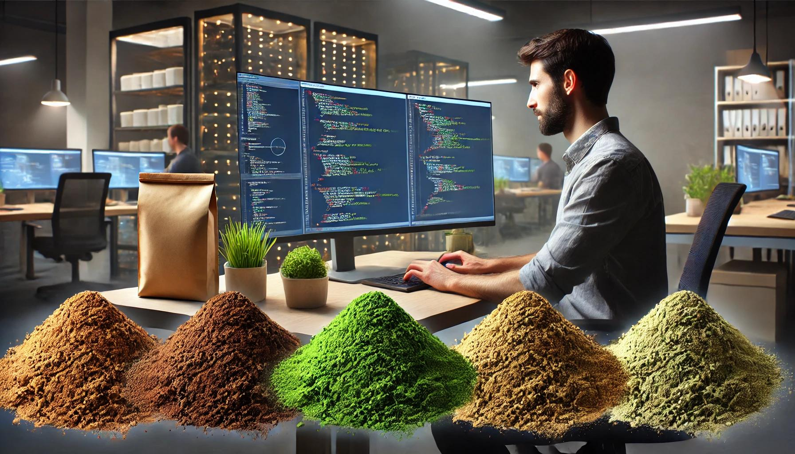

Digital Transformation & 2050 Carbon Neutrality
이노웨이브는 수산양식, 해양환경, 해양생태계에 관한 연구를 수행하는 국립 & 지자체 연구소, 정부 출연 연구 기관들에게 IT(IoT, 딥러닝, AI) 기반 연구 인프라를 제공합니다.
2050 탄소 중립 달성을 위한 미세조류 & 해조류의 탄소 순환 연구에 참여하며, 탄소 순환 실천을 위해 프리미엄 미세조류를 연구기관에 공급하고 있습니다.

이노웨이브는 수산양식, 해양환경, 해양생태계에 관한 연구를 수행하는 국립 & 지자체 연구소, 정부 출연 연구 기관들에게 IT(IoT, 딥러닝, AI) 기반 연구 인프라를 제공합니다.
2050 탄소 중립 달성을 위한 미세조류 & 해조류의 탄소 순환 연구에 참여하며, 탄소 순환 실천을 위해 프리미엄 미세조류를 연구기관에 공급하고 있습니다.



제품 상담 및 견적 문의는 아래 연락처로 연락주시기 바랍니다.
Email: ino200424@gmail.com
Tel: 070 - 8778 - 2378 (10:00AM ~ 17:00PM)